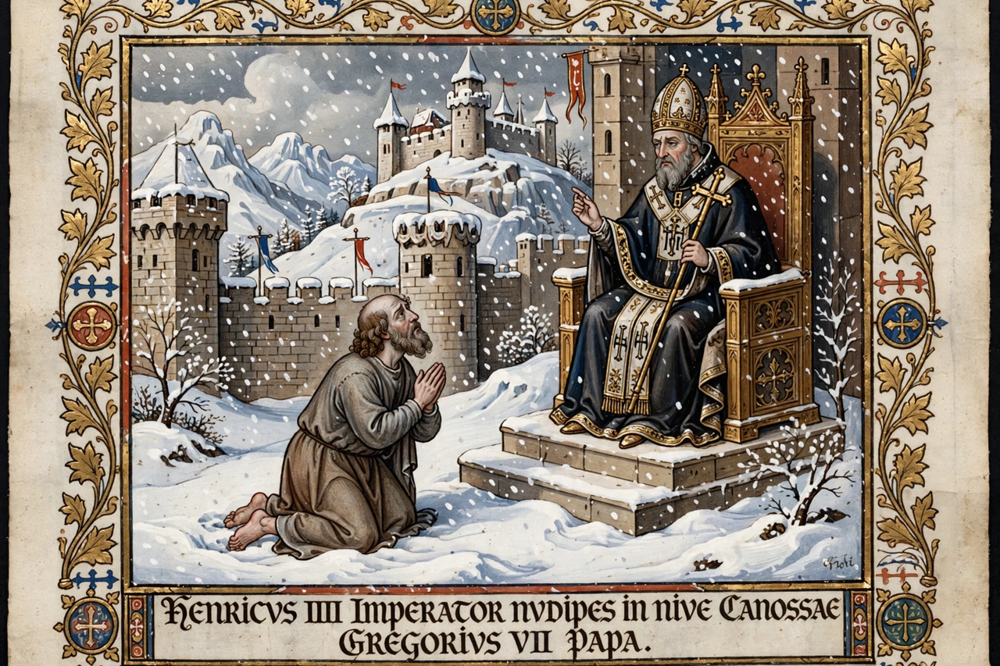

Investiture Controversy

The Investiture Controversy or Investiture Contest was a conflict between church and state in medieval Europe over the ability to choose and install bishops and abbots (investiture) and the abbots and bishops themselves. It began in 1076 as a struggle between Pope Gregory VII and Henry IV, Holy Roman Emperor, and continued into the 12th century, gravely weakening imperial power in Germany and Italy.
Background
Lay rulers had long appointed bishops, who were also great landholders and royal officials; emperors in particular relied on bishops to counterbalance the hereditary nobility. The 11th-century Gregorian Reform, aiming to free the church from lay control and enforce clerical celibacy and the ban on simony, challenged this system. Gregory's Dictatus papae (1075) asserted sweeping papal claims, including the power to depose emperors.
The struggle
When Gregory forbade lay investiture, Henry defied him; Gregory excommunicated and deposed him (1076), whereupon German princes threatened to elect a new king. Henry famously crossed the Alps and stood penitent for three days at Canossa in January 1077, winning absolution — but the conflict resumed, Gregory supported an anti-king, and Henry installed an antipope and drove Gregory into exile, where he died at Salerno in 1085 ("I have loved justice and hated iniquity, therefore I die in exile").
Settlement
The Concordat of Worms (1122), agreed between Henry V and Pope Callixtus II, ended the imperial phase: the emperor renounced investiture with ring and staff and conceded free election, while bishops in Germany would be elected in his presence and receive their temporal lands (regalia) from him. Similar compromises were reached in England (1107) and France. The controversy is widely seen as a foundational episode in the separation of spiritual and temporal authority in the West.
See also: Holy Roman Empire, Pope Urban II, Feudalism.